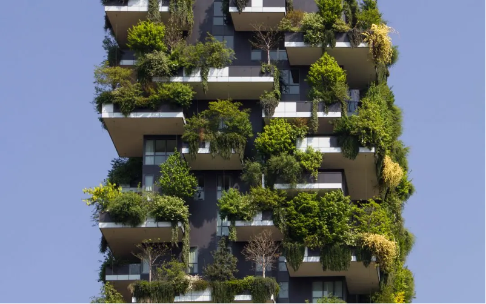

Les Grattes Ciels équipés de structures durables
Selon notre sondage,
ODD 11: Villes et communautés durables
L’avenir que nous voulons comprend des villes qui offrent à tous de grandes possibilités

Les Grattes Ciels équipés de structures durables : Innovation Scientifique pour un Avenir Durable
La situation écologique au Liban est complexe et multifacette. Selon les statistiques disponibles, le Liban a une empreinte écologique de 3,4 hectares globaux par habitant, ce qui le place dans les pays avec une empreinte écologique moyenne à élever. Le Liban a connu des défis environnementaux majeurs, tels que l'explosion du port de Beyrouth en 2020, et il fait face à plusieurs problèmes écologiques comme :
- Gestion des déchets
- Pollution de l’air et de l’eau
- Gestion des ressources naturelles
- Changements climatiques
- Initiatives de durabilité
- Gaspillage d’espace
Une structure durable est une construction conçue et réalisée de manière à minimiser son impact sur l'environnement tout en offrant des performances à long terme en termes de résistance, de fonctionnalité et de durabilité.
Le Liban compte plusieurs gratte-ciels, principalement concentrés dans la ville de Beyrouth.
Les grattes ciels dotés de structures durables aide à :
-
Utilisation efficace de l’espace
Reduction de l’étalement urbain
Efficacité énergétique
Transport durable
Reduction de l’empreinte environnemental
Résilience aux changements climatique
Amélioration de la qualité de l’air intérieur
Initiatives de durabilité

Pour construire des bâtiments durables, on peut utiliser une combinaison de techniques, de technologies et de pratiques qui favorisent la durabilité environnementale et la performance à long terme des structures comme :
Conception intègre impliquant des architectes et des ingénieurs
Choix des matériaux isolants, recyclable ou recycles
Nouvelles Technologies comme des fenêtres a double vitrage a faible émissivité
En résumé, une structure durable est une construction qui prend en compte les aspects environnementaux, économiques et sociaux tout au long de son cycle de vie, offrant ainsi des avantages à long terme pour ses occupants.